1. Какие бывают машины
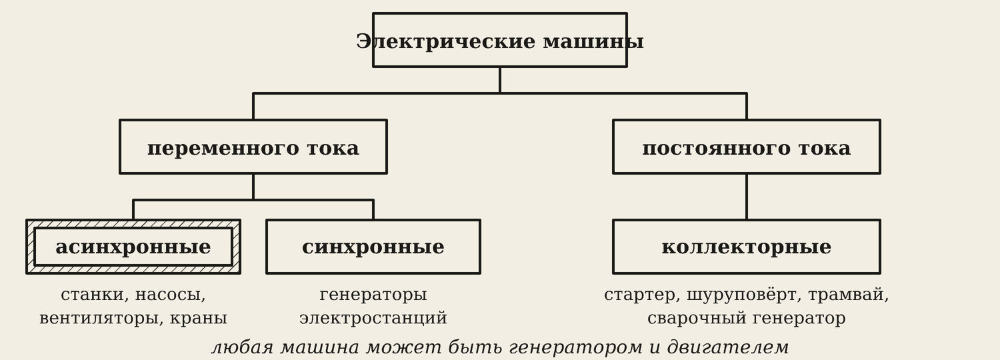
Электрические машины делятся на две семьи:
- Переменного тока: асинхронные (почти все двигатели в цехе) и синхронные (генераторы электростанций, генератор автомобиля).
- Постоянного тока — коллекторные: стартер, шуруповёрт, трамвай, сварочный генератор.
Запомните
Любая машина обратима: крутим вал — получаем ток (генератор); даём ток — крутится вал (двигатель).
2. Вращающееся поле
В статоре три пары обмоток. Они не двигаются. Через них идут три тока, сдвинутые на 120°. Их общее магнитное поле вращается — как бегущие огни на вывеске: лампочки стоят, а огонёк бежит. Через 11 секунд в анимации меняют местами две фазы — поле разворачивается.
3. Асинхронный двигатель
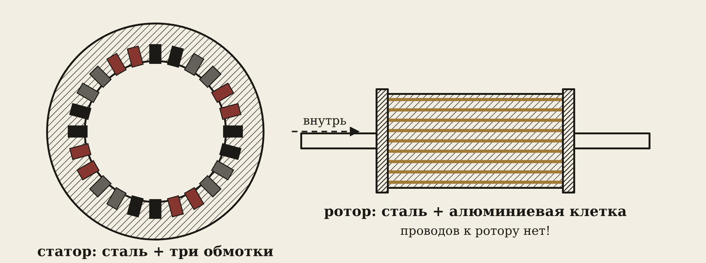
- Статор — неподвижное кольцо из стальных пластин, в пазах три обмотки, к ним подключают сеть.
- Ротор — стальной цилиндр, в пазы залит алюминий: стержни, замкнутые кольцами по торцам. К ротору не идёт ни одного провода.
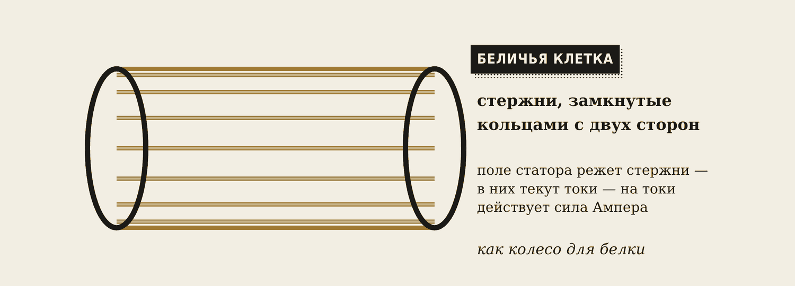
Если «растворить» сталь ротора, останется клетка, как колесо для белки, — отсюда название «беличья клетка».
Как он крутится: вращающееся поле режет стержни ротора → в них наводятся токи (электромагнитная индукция) → на токи в поле действует сила Ампера → ротор крутится вслед за полем.
4. Скольжение
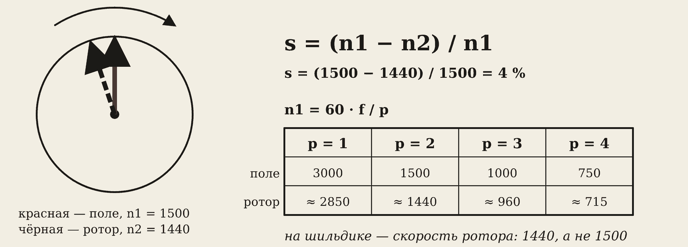
Если ротор догонит поле, стержни перестанут пересекать его — токов и силы не будет. Поэтому ротор всегда чуть медленнее поля. Отсюда название: асинхронный — несинхронный.
s = (n1 − n2) / n1 n1 = 60 · f / p
- n1 — скорость поля, n2 — скорость ротора, p — число пар полюсов.
- При 50 Гц: p = 1 → 3000, p = 2 → 1500, p = 3 → 1000, p = 4 → 750 об/мин.
- Обычное скольжение 2–6 %. Больше нагрузка — больше скольжение.
Пример. На шильдике 1440 об/мин. Ближайшая большая скорость поля — 1500, значит p = 2. s = (1500 − 1440) / 1500 = 4 %.
5. Пуск: почему мигает свет
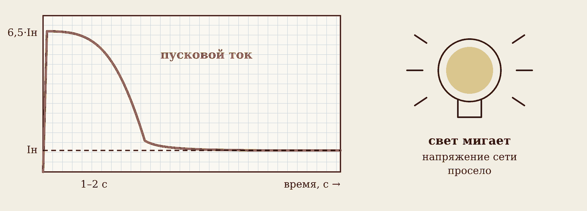
В момент пуска ротор стоит, поле режет стержни с полной скоростью — токи огромные. Пусковой ток в 5–7 раз больше номинального. Он течёт по проводам сети, напряжение проседает — мигает свет. Через 1–2 секунды ротор разгоняется, ток падает.
Как уменьшить бросок тока:
- Звезда → треугольник: пускают звездой — ток в 3 раза меньше, через несколько секунд реле переключает на треугольник. Подходит двигателям, которые в сети 380 В работают треугольником. Минус — момент тоже втрое меньше, под нагрузкой может не тронуться.
- Устройство плавного пуска плавно поднимает напряжение.
- Частотный преобразователь плавно поднимает частоту от 0 до 50 Гц — лучший способ: ток почти не выходит за номинальный.
Из-за пускового тока для двигателей ставят автоматы с характеристикой D (или C для маленьких): они не срабатывают на короткий бросок.
6. Реверс, клеммник, скорость
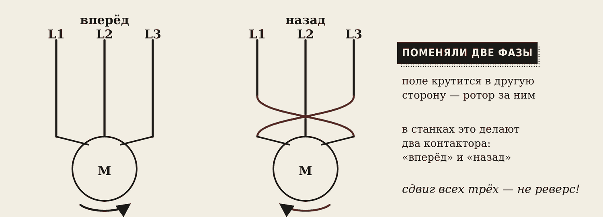
Реверс — поменять местами любые две фазы. Порядок фаз стал другим — поле крутится обратно. В станках это делают два контактора «вперёд» и «назад» с блокировкой. Сдвинуть все три фазы по кругу — не реверс!

Клеммник. Шесть болтов — начала и концы обмоток. «Δ/Y 220/380 В» — в сети 380 В ставим звезду. «Δ/Y 380/660 В» — треугольник.
Скорость меняют частотой (частотник — плавно) или числом полюсов (двухскоростные двигатели — ступенчато).
Осторожно
Перекидывать фазы и перемычки — только при снятом напряжении и только электрику с допуском.
7. Машины постоянного тока
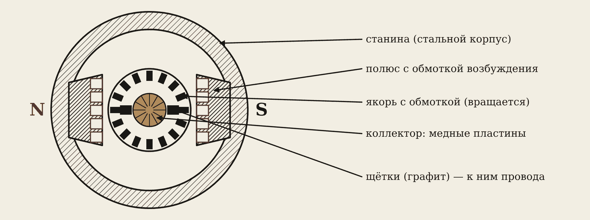
- Станина с полюсами создаёт постоянное поле (обмотка возбуждения или постоянные магниты).
- Якорь с обмоткой вращается.
- Коллектор — цилиндр из медных пластин на валу.
- Щётки из графита скользят по коллектору и подводят ток.
Зачем коллектор. Проводник под полюсом N толкается в одну сторону, под S — в другую. Без переключения тока через пол-оборота сила потянула бы назад, и якорь бы встал. Коллектор каждые пол-оборота меняет направление тока в проводнике — и якорь крутится всё время в одну сторону.
- Двигатель: даём ток — крутится. Обороты легко менять напряжением.
- Генератор: крутим якорь — получаем ЭДС, пропорциональную оборотам.
- Стартер, трамвай — последовательное возбуждение: огромный момент на пуске.
- Болгарка, дрель — коллекторный («универсальный») двигатель, работает и от переменного тока. Стёрлись щётки — искрит и теряет мощность.
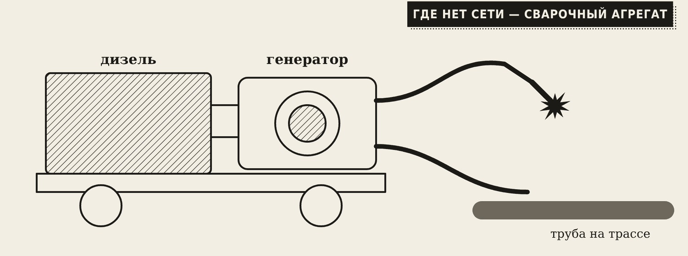
Сварочный агрегат — дизель плюс сварочный генератор. Варят там, где нет сети: трасса трубопровода, мост, стройка. Корпус агрегата заземляют штырём.
8. Потери, КПД и шильдик
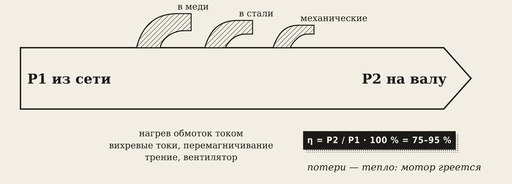
Двигатель берёт из сети P1, отдаёт на вал P2. Разница — потери в меди (нагрев обмоток), в стали (вихревые токи) и механические (трение, вентилятор). Всё это — тепло.
η = P2 / P1 · 100 % I = P1 / (1,73 · U · cos φ)
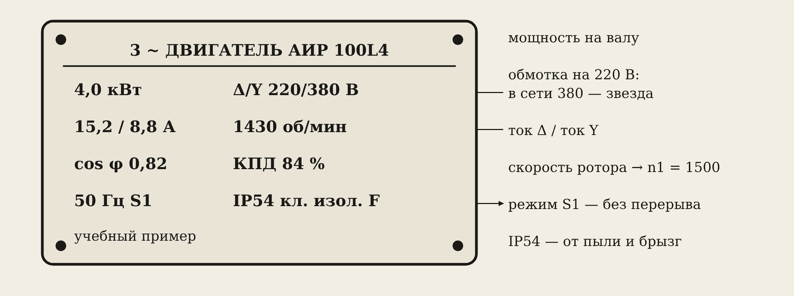
Читаем шильдик. 4 кВт — мощность на валу (P2). Из сети: P1 = 4 / 0,84 = 4,76 кВт. Ток в сети 380 В: I = 4760 / (1,73 · 380 · 0,82) = 8,8 А — совпадает со второй цифрой «15,2 / 8,8 А». 1430 об/мин → n1 = 1500, s = 4,7 %. «Δ/Y 220/380» → в сети 380 В — звезда. Автомат — ближайший больший номинал 10 А, характеристика D. Пусковой ток ≈ 6,5 · 8,8 ≈ 57 А.
9. Электропривод
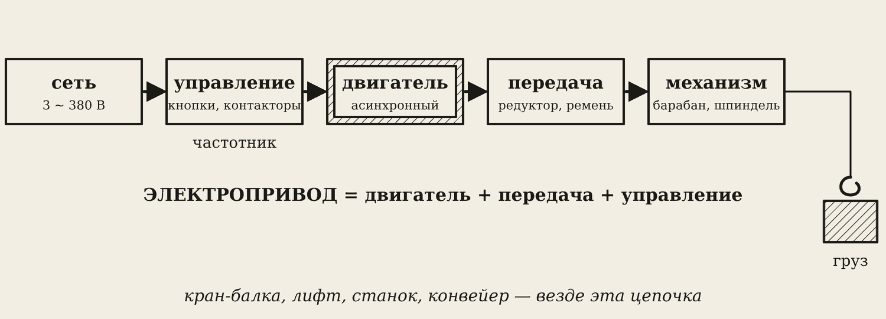
Электропривод = двигатель + передача + управление. Двигатель крутится быстро (1500 об/мин), а барабану крана нужно 20 — поэтому стоит редуктор: уменьшает скорость и во столько же раз увеличивает момент.
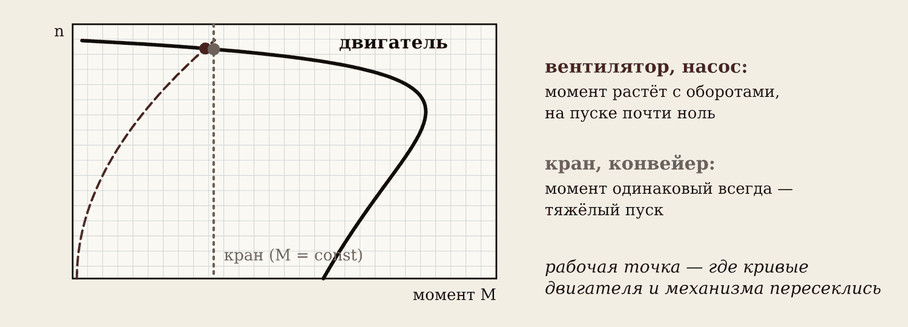
Механизмы нагружают двигатель по-разному. Вентилятор, насос — на пуске почти не сопротивляются, момент растёт с оборотами. Кран, конвейер — груз весит одинаково, момент постоянный с первого мгновения: пуск тяжёлый.
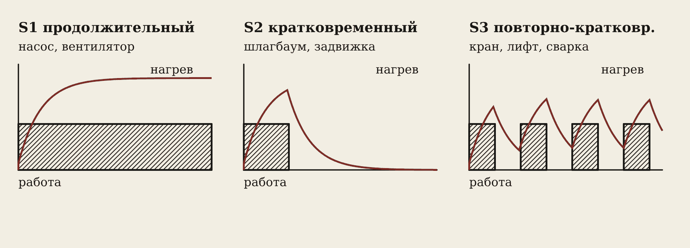
Режимы работы:
- S1 продолжительный — насос, вентилятор: включили на смену.
- S2 кратковременный — шлагбаум, задвижка: не успевает нагреться.
- S3 повторно-кратковременный — кран, лифт, сварка: работа и паузы чередуются.
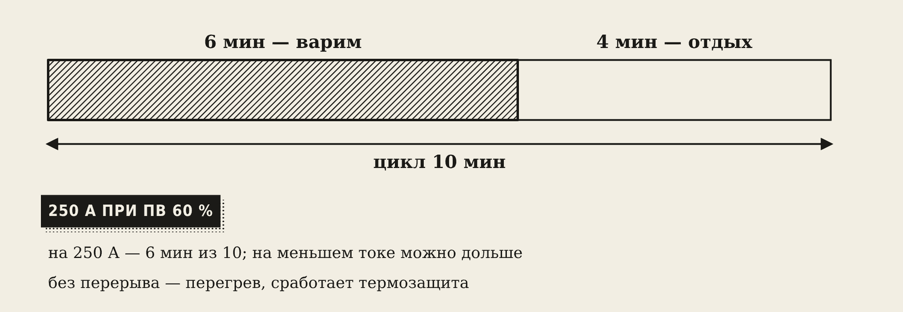
ПВ % (продолжительность включения) — сколько процентов цикла можно работать. «250 А при ПВ 60 %» — из 10 минут 6 варим, 4 отдыхаем. На меньшем токе можно дольше. Нарушите — сработает термозащита.
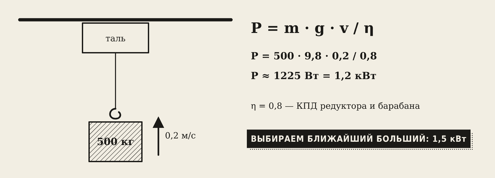
Выбор двигателя: мощность (посчитать и взять ближайший больший), скорость, режим, условия (пыль, влага — IP54 и выше).
P = m · g · v / η
Словарик
- Статор — неподвижная часть с обмотками.
- Ротор — вращающаяся часть.
- Беличья клетка — ротор со стержнями, замкнутыми кольцами.
- n1 — скорость вращающегося поля, 60·f / p.
- Скольжение s — отставание ротора от поля, в процентах.
- Пусковой ток — ток в момент пуска, в 5–7 раз больше номинального.
- Реверс — вращение в обратную сторону.
- Частотник — частотный преобразователь, меняет частоту и скорость.
- Якорь — вращающаяся часть машины постоянного тока.
- Коллектор — медные пластины на валу; переключают ток в якоре.
- Щётки — графитовые контакты, скользят по коллектору.
- Электропривод — двигатель + передача + управление.
- S1, S2, S3 — продолжительный, кратковременный, повторно-кратковременный режимы.
- ПВ % — доля цикла, которую можно работать на этом токе.
Эталоны в тетрадь
Перепишите в тетрадь по билетам — каждый эталон на отдельную страницу, с рисунком и строкой «Мой пример».
Асинхронный двигатель
Вращающееся магнитное поле. Устройство и принцип действия асинхронного двигателя, скольжение.
- Три обмотки статора, подключённые к трём фазам, создают вращающееся магнитное поле — как «бегущие огни» на вывеске.
- Устройство: неподвижный статор с обмотками и вращающийся ротор «беличья клетка» (стержни, замкнутые кольцами). (Рисунок.)
- Принцип: вращающееся поле наводит в роторе токи, на них действует сила Ампера — ротор крутится вслед за полем.
- Ротор всегда немного отстаёт от поля, поэтому двигатель «асинхронный». Скольжение s = (n₁ – n₂) / n₁, обычно 2–6 %. Частота поля n₁ = 60·f / p (3000, 1500, 1000 об/мин).
- Самый распространённый двигатель: станки, насосы, вентиляция, кран-балки.
Пуск, реверс, регулирование скорости
Пуск, реверс и регулирование частоты вращения асинхронного двигателя. Звезда и треугольник на клеммнике. Почему мигает свет.
- Пуск: пусковой ток в 5–7 раз больше номинального. Напряжение в сети проседает — поэтому мигает свет.
- Как уменьшить пусковой ток: пуск «звезда → треугольник», устройство плавного пуска, частотный преобразователь.
- Реверс (вращение в другую сторону) — поменять местами любые две фазы.
- Скорость регулируют частотным преобразователем (меняет частоту f) или переключением числа полюсов.
- Клеммник: 6 выводов; перемычками собирают «звезду» или «треугольник» по шильдику. (Рисунок перемычек.)
Машины постоянного тока
Машины постоянного тока: устройство, режим генератора и двигателя. Сварочный генератор.
- Устройство: статор с полюсами (магнит или обмотка возбуждения), якорь с обмоткой, коллектор (медные пластины) и щётки.
- Коллектор со щётками переключает ток в обмотке якоря, чтобы он крутился всё время в одну сторону.
- Двигатель: подали ток — сила Ампера крутит якорь. Генератор: крутим якорь — электромагнитная индукция даёт ЭДС. Одна машина может работать и так, и так.
- Примеры: стартер машины, шуруповёрт, трамвай. Сварочный агрегат (генератор + дизель) — для работы там, где нет сети: трасса трубопровода, стройка.
Потери, КПД, шильдик двигателя
Потери энергии и КПД электрических машин. Что указано на шильдике двигателя.
- Потери: в меди (нагрев обмоток), в стали (вихревые токи, перемагничивание), механические (трение в подшипниках, вентилятор). Все они уходят в тепло — двигатель греется.
- КПД η = P₂ / P₁ · 100 %, у двигателей обычно 75–95 %.
- На шильдике: тип, мощность на валу (кВт), напряжение (Δ/Y 220/380 В), ток (А), частота вращения (об/мин), cos φ, КПД, 50 Гц, режим работы (S1), степень защиты IP.
- По шильдику выбирают автомат, сечение кабеля и схему подключения.
Электропривод и ПВ %
Электропривод: структура, режимы работы, выбор двигателя. ПВ % сварочного аппарата.
- Электропривод = двигатель + передача (редуктор, ремень) + управление (кнопки, контакторы, преобразователь). Пример: лифт, кран-балка, станок.
- Режимы: продолжительный S1 (насос, вентилятор), кратковременный S2 (шлагбаум, задвижка), повторно-кратковременный S3 (кран, лифт, сварка).
- ПВ % (продолжительность включения; в ГОСТ 95-77 — ПН, продолжительность нагрузки) — сколько процентов цикла (обычно 10 мин) можно работать. ПВ 60 % = 6 мин работы + 4 мин отдыха.
- В сварке: «250 А при ПВ 60 %» — на этом токе нельзя варить без перерыва, иначе аппарат перегреется и сработает термозащита.
- Выбор двигателя: по мощности, частоте вращения, режиму работы и условиям (пыль, влага).
Проверь себя
Сначала ответьте сами — в тетради или вслух. Потом нажмите на вопрос, чтобы увидеть ответ.
1Почему двигатель называют асинхронным?
Ротор всегда немного отстаёт от поля: если догонит, токов в стержнях не будет.
2f = 50 Гц, p = 3. Скорость поля?
n1 = 60 · 50 / 3 = 1000 об/мин.
3На шильдике 2850 об/мин. Какое n1 и скольжение?
n1 = 3000; s = 150 / 3000 = 5 %.
4Почему при пуске мощного двигателя мигает свет?
Пусковой ток в 5–7 раз больше номинального, напряжение сети проседает.
5Как развернуть асинхронный двигатель?
Поменять местами две любые фазы.
6Зачем машине постоянного тока коллектор?
Переключает ток в якоре каждые пол-оборота, чтобы сила Ампера крутила якорь в одну сторону.
7Двигатель 4 кВт, η = 84 %. Сколько он берёт из сети?
P1 = 4 / 0,84 ≈ 4,76 кВт.
8Что значит «ПВ 60 %»?
Из цикла 10 минут можно работать 6, отдыхать 4.
9Таль поднимает 1000 кг со скоростью 0,1 м/с, η = 0,8. Какой двигатель нужен?
P = 1000 · 9,8 · 0,1 / 0,8 ≈ 1225 Вт — берём 1,5 кВт.
Попробуйте в лаборатории
Откройте на телефоне или компьютере — ничего устанавливать не нужно.
Ответы к «Проверь себя»
- Ротор всегда немного отстаёт от поля: если догонит, токов в стержнях не будет.
- n1 = 60 · 50 / 3 = 1000 об/мин.
- n1 = 3000; s = 150 / 3000 = 5 %.
- Пусковой ток в 5–7 раз больше номинального, напряжение сети проседает.
- Поменять местами две любые фазы.
- Переключает ток в якоре каждые пол-оборота, чтобы сила Ампера крутила якорь в одну сторону.
- P1 = 4 / 0,84 ≈ 4,76 кВт.
- Из цикла 10 минут можно работать 6, отдыхать 4.
- P = 1000 · 9,8 · 0,1 / 0,8 ≈ 1225 Вт — берём 1,5 кВт.